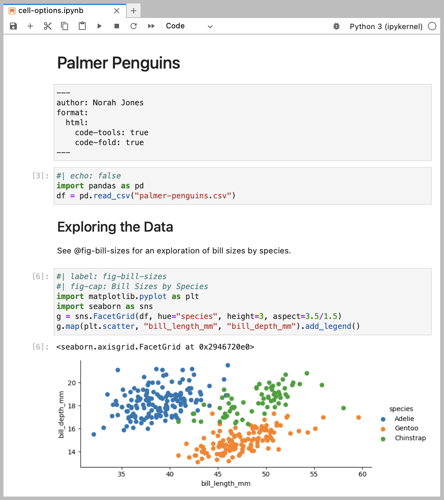
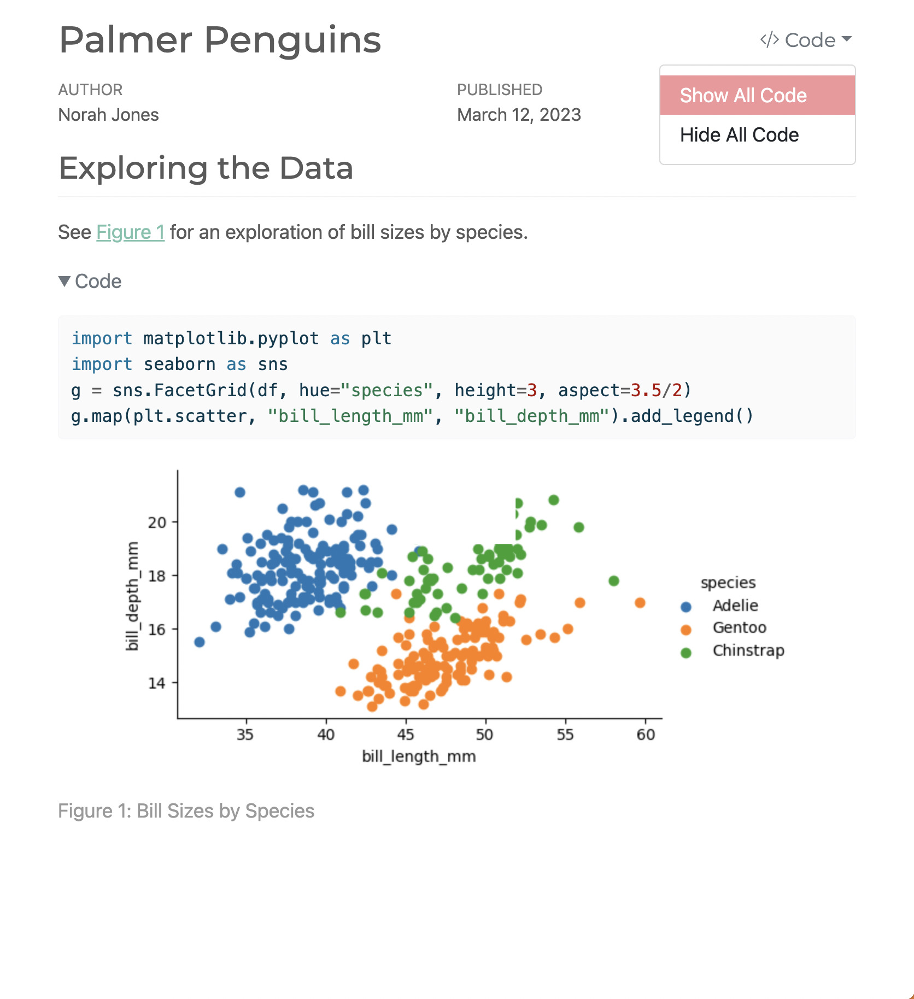
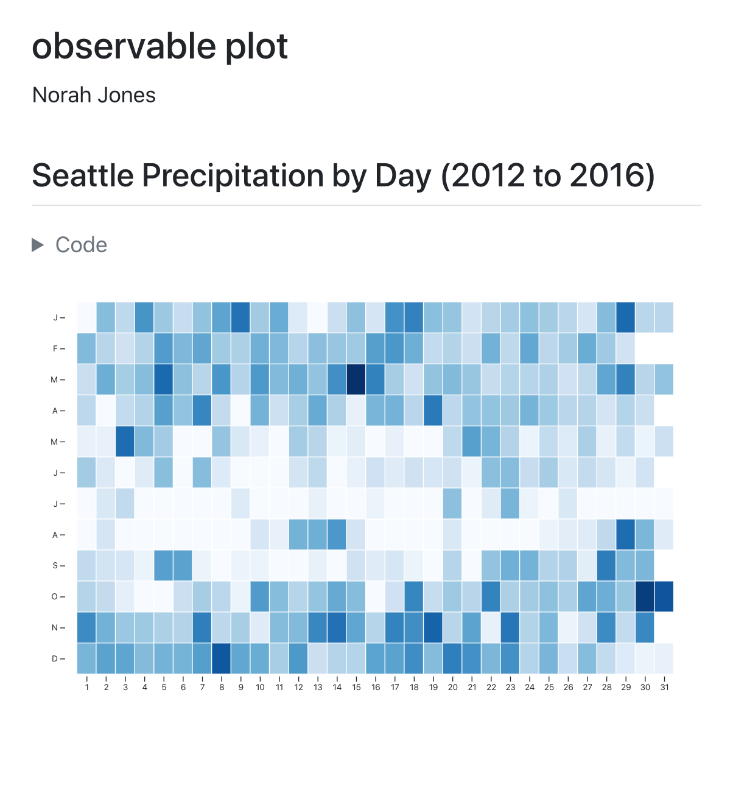

Programming Languages we use
Matlab .


Python
---
title: "ggplot2 demo"
author: "Norah Jones"
date: "5/22/2021"
format:
html:
fig-width: 8
fig-height: 4
code-fold: true
---
## Air Quality
@fig-airquality further explores the impact of temperature on ozone level.
```{r}
#| label: fig-airquality
#| fig-cap: "Temperature and ozone level."
#| warning: false
library(ggplot2)
ggplot(airquality, aes(Temp, Ozone)) +
geom_point() +
geom_smooth(method = "loess")
```

Combine markdown and Julia code to create dynamic documents that are fully reproducible. Quarto executes Julia code via the IJulia Jupyter kernel, enabling you to author in plain text (as shown below) or render existing Jupyter notebooks.
---
title: "Plots Demo"
author: "Norah Jones"
date: "5/22/2021"
format:
html:
code-fold: true
jupyter: julia-1.8
---
## Parametric Plots
Plot function pair (x(u), y(u)).
See @fig-parametric for an example.
```{julia}
#| label: fig-parametric
#| fig-cap: "Parametric Plots"
using Plots
plot(sin,
x->sin(2x),
0,
2π,
leg=false,
fill=(0,:lavender))
```

Wolfram.
---
title: "observable plot"
author: "Norah Jones"
format:
html:
code-fold: true
---
## Seattle Precipitation by Day (2012 to 2016)
```{ojs}
data = FileAttachment("seattle-weather.csv")
.csv({typed: true})
Plot.plot({
width: 800, height: 500, padding: 0,
color: { scheme: "blues", type: "sqrt"},
y: { tickFormat: i => "JFMAMJJASOND"[i] },
marks: [
Plot.cell(data, Plot.group({fill: "mean"}, {
x: d => new Date(d.date).getDate(),
y: d => new Date(d.date).getMonth(),
fill: "precipitation",
inset: 0.5
}))
]
})
```
Papers From dr Farid
Here is a registery of all paper supplied to us by dr farid.
Papers Found By us
our papers.
Slides
Slides.
Draft Papers
our draft papers.
Figures
Figures.
Books
Books.
Websites
Websites.
Software Tools we use
tools we use.
Software We Create
Software.